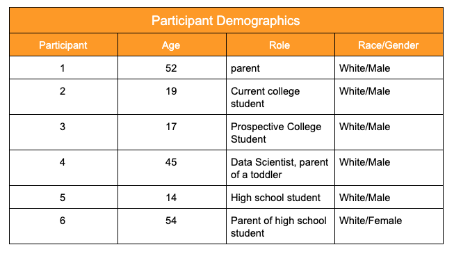
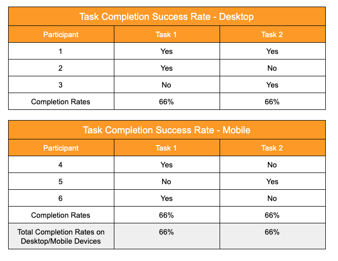
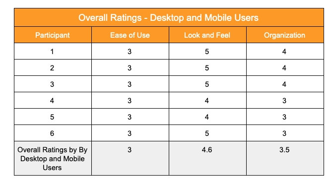
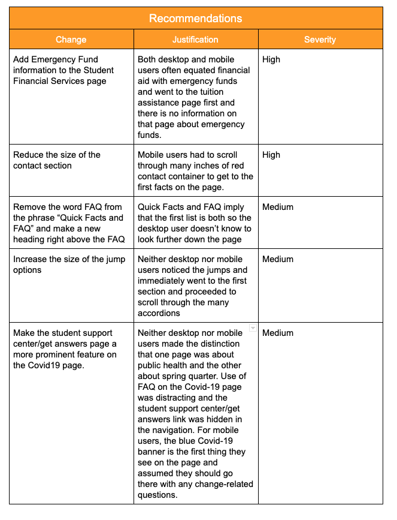

Introduction
The website seattleu.edu/getanswers is a website designed to provide answers to Seattle University students about the many changes underway regarding Spring Quarter and campus operations while the university operates remotely.
The page was recently created and added to the Seattle University website to respond as quickly as possible to questions as new policies were being created, but we want to conduct a usability test to make sure students are able to find the information they are looking for or reach out to informed staff who can help them find answers.
Executive Summary
The usability test of seattleu.edu/getanswers were conducted for both desktop and mobile devices. The desktop tests were on 4/45-26/2020 and they were conducted on the users’ own computers. The mobile tests were conducted on 5/2/2020 on the users’ own mobile device and shared by screen share on Zoom and recorded on Zoom. The tests were conducted in Seattle, WA.
The purpose of the tests was to determine whether the website was easy to use and to gauge the look and feel of the site and its organization. The report on solely desktop users can be found in last week’s blog post.
This report will be a combination of the results and recommendations from both sets of users.
Three participants conducted the tests. The sessions were short-10 minutes each. Each participant conducted the same tests.
The overall results were that the users found the page to contain useful information. However, both types of users experienced some challenges.
For desktop users, some guideposts were unclear and users strayed, looking for the right place to find answers. Users also didn’t use some navigation options, like jumps, and instead ended up doing a lot of scrolling.
For mobile users, some containers were too large and required a lot of scrolling. Like the desktop users, they also wanted more redundancy on pages as they unsuccessfully looked in related places for information.
Recommendations for improvement include:- Adding redundancies: Add Emergency Fund information to the Student Financial Services page
- Clarifying headings: Remove the word FAQ from the phrase “Quick Facts and FAQ” and make a new heading for FAQ right above the FAQ
- Clarifying navigation: Increase the size of the jump options
- Elevating links: Make the student support center/get answers page a more prominent feature on the Covid19 page
- Reducing the size of containers: the “contact” container is too large when viewing on a mobile device
This blog contains details about the methodology, the participants and the tasks assigned. It summarizes the results and ratings, and concludes with recommendations.
Methodology
Sessions
The user test sessions happened over the course of a week, with desktop users going first, and concluding with mobile users. Each session was approximately 10 minutes in length. Participants were asked to complete 2 tasks and were questioned about 3 things: ease of the navigating and finding the information, the overall look and feel and tone of the page, and the organization of the order of things on the page.
Participants
I recruited 6 participants for the user test.
Tasks/Scenarios
Participants were asked questions based on a script. This particular user test script is for mobile testers. This is the desktop user test script. Testers were introduced to the project and then asked to start on the homepage of Seattle U and find the answers to two scenarios, both of which are common questions asked by people who end up emailing or calling the student support center:
- Task 1: Emergency Funds. You are a current college student and you want to know how to apply for emergency funds. What would you do?
- Task 2: Credit/No Credit. You are a current college student and you want to know what you should do about deciding whether to apply for credit/no credit options for Winter quarter grades. What would you do?
Results
Users had mixed results in their tasks. 
Overall Ratings
Users found the site a little challenging to use. They liked the look and feel of the site and said it felt like a place for college students. They found the organization could use some improvement.
Recommendations
Users highlight some simple navigation, headings and links changes that can make the site more intuitive.
Conclusion
Users found the page to be informative and a welcome source to turn to when there are so many policies changing making other recent policy changes outdated. Most users were able to find answers to most tasks but some clearer signposts, smaller sections, and more prominent navigation options will help to make the page a quicker source of information. Implementing the recommendations and continuing to work with both desktop and mobile users (real laypeople) will ensure a user-centered website.